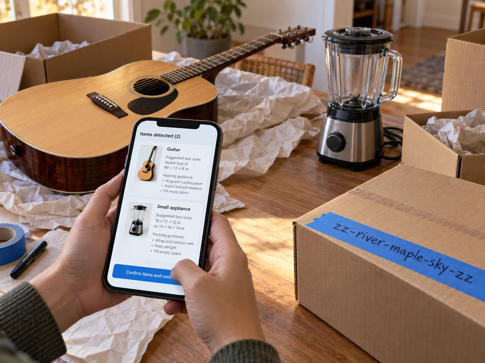

Postal and parcel
Write a reference directly on a parcel; photograph loose items and receive packing guidance before choosing a parcel code.
Write a code on a thing; find its record by camera, typing, or voice.

zz-copper-lantern-sky-zz
zzThis is a human-readable, human-writable code for the physical world. Write
zz-copper-lantern-sky-zz on tape, a crate, a parcel, or a sign. Link it to a digital
record, then find it by camera, typing, or voice.
A zz code gives people a way to create the mark themselves, wherever the work happens. AI can help identify what a camera sees, count what remains, suggest how an item should be handled, and prepare the next task. The same visible code connects the item, its history, and the people responsible for it.
zz-copper-lantern-sky-zz zz-fastfreight-c4821-123-zz
Easier handling: mark crates, bags, and parts, then read, link, and hand them off with a phone camera or a few spoken words. For shipping, including across borders, the zz-code can be the shipment's shared identity and hub, where customs, carriers, and payment services find the same information, and its ID on the shared ledger used by every service that handles the goods.
zz-post-rock-river-sky-zz
A handwritten zz-code can serve as proof of postage and a trackable reference: write it in the stamp corner of a letter or parcel, and it links to postage, routing, and tracking.
zz-kathy-lost-cat-zz zz-moving-box-kitchen-3-zz
Free for everyone. Write a code on a lost-pet flyer, a moving box, a garage-sale item, or a note, and anyone can scan it, like a QR code you can write by hand. Endless imaginative uses. The zzThat app is coming to Android, iOS, and the web at zzthat.com.
zz-acme-support-agent-zz zz-@agentsmith-zz
AI agents need identities people can easily know and recognize by name, and enterprises need to name and brand their agents, on the everyday web as well as on blockchains. A zz-code gives an agent a short name people can write, say, and verify, linked to who runs it and what it is allowed to do.
zz-btc-harbor-violet-nine-zz zz-harbor-violet-nine-zz
Wallet, account, smart-contract, and agent addresses on networks such as Bitcoin and Ethereum are long strings of random characters. A zz-code is a readable alias for any of them: easier to write, say, and check on screen before you send.
zz-fn-pay-agentsmith-zz zz-run-reorder-water-zz
A zz-code can also call a function: a short, human-writable command that asks a system to do something, such as reorder supplies, pay an agent, or open a work order. A macro runs only for an authenticated, authorized user who confirms it; the code itself carries no authority.
| Barcode | QR code | Alphanumeric code | zzThis | |
|---|---|---|---|---|
| Create the mark | Print or display | Print or handwrite | Write, draw, print, or display: words, numbers, or symbols | |
| Read the mark | Scanner | Camera | Person, scanner, or typing | Person, camera, voice, typing, or within text |
| What it connects | Item to data | Surface to digital content | Shipment or item to its tracking status | Thing to its record, next action, and authorized macros |
| Easy to say and remember | No | No | Hard (8 to 22 random characters) | Yes (2 to 4 words, or short words and numbers) |
Alphanumeric example: an 8-character handwritten postage code (Deutsche Post) or a 14–22-character parcel tracking number. zz-codes can be words, numbers, or simple hand-drawn symbols such as a smiley or tally marks, and can be read even when written inside a sentence.
Core identity: MARK a lowercase zz code → READ it by camera or manual entry → LINK it to a record → REPORT the words by voice where useful.
Concept illustrations. These panels show intended use, not a deployed system.
Write the code on tape, a crate, or a pallet.

Camera or manual entry.

Connect to an existing record and photo.
zz-copper-lantern-sky-zz Mock data

Say the code words if a voice handoff is useful.

Example code zz-copper-lantern-sky-zz
For a field code made with no device, link and reconcile later.
Real photos of real handwriting. Everything else on this page is a concept rendering.

zz-ai@ agentsmith-zz

zz- be bold be brave be beautiful-zz

zz mark on an object

zz tag on a dog collar
Hand-mark mixed items at the point of work; link the mark to a record.
Concept illustrations. These panels show intended use, not a deployed system.

No-device items No-device marking on duffels and a crate.

Obscured label

Wrapped pallet Wrapped mixed-goods pallet with circled zz marker.
A second layer after the handwritten code: see an item, identify it, choose its next task.
Concept illustrations. These panels show intended use, not a deployed system.

01 Photograph
Loose or broken items; spoken note.

02 Guide
Confirmed item and handling choices.

03 Review
Prepared form and photos.


AI-assisted work: PHOTOGRAPH one or more items → CONFIRM the proposed identification → choose a handling or inventory action by touch or voice → REVIEW the prepared record or form.
The same writable code works in other settings.

Write a reference directly on a parcel; photograph loose items and receive packing guidance before choosing a parcel code.
Hand-mark bags, crates, pallets, and mixed goods; read or relay a code; connect it to existing identifiers. Then photograph loose items, prepare a turn-in, compare inventory, and use touch-first actions.

A handwritten code on a lost-cat flyer or other public surface can lead to a useful page.

A short human-readable code can stand in for a long machine address used by software agents.